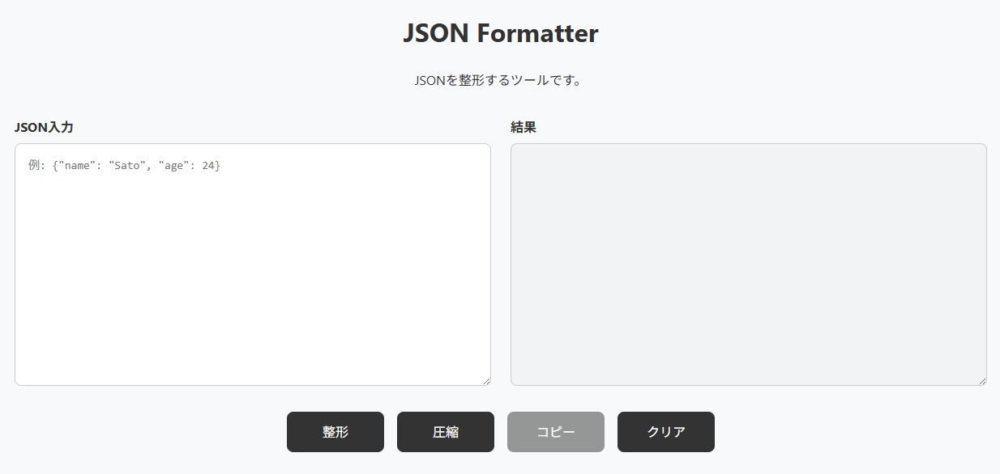

Portfolio Site

制作した作品や使用技術を紹介するポートフォリオサイトです。 セマンティックHTMLやレスポンシブ対応を意識し、 設計から実装までの変更履歴をGitHubで管理しています。
- HTML
- CSS
- JavaScript
- Git
- GitHub
Webエンジニアとして、保守性を意識した開発に取り組んでいます。
設計から品質を考え、 保守性の高いWebアプリケーション開発を学んでいます。
はじめまして。松田です。
Webエンジニアとして、設計から品質を意識した開発ができるエンジニアを目指しています。
現在は、実務とポートフォリオ制作を通して技術力を高めています。
制作した作品や使用技術を紹介するポートフォリオサイトです。 セマンティックHTMLやレスポンシブ対応を意識し、 設計から実装までの変更履歴をGitHubで管理しています。

文字数や文字種を指定してパスワードを生成できるWebツールです。 入力値の検証やボタンの状態管理を意識して実装しました。

入力したJSONを整形・圧縮できるWebツールです。 JSON形式の検証、コピー、クリア機能を実装し、 エラー表示やボタンの状態管理にも配慮しました。